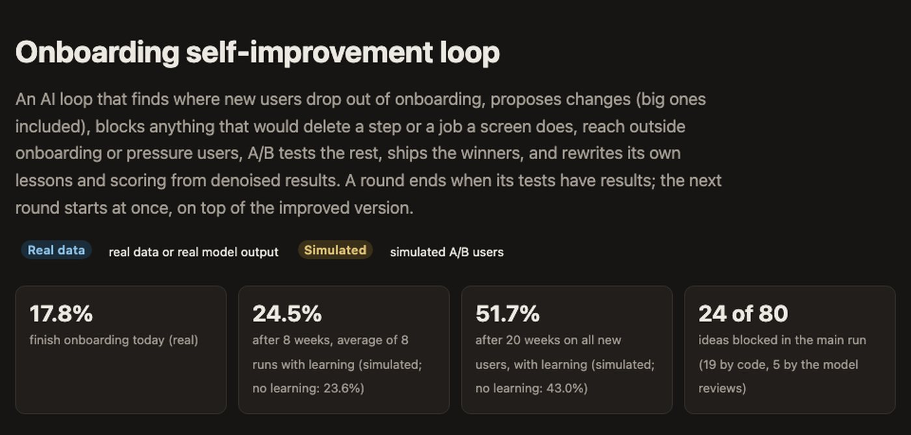

Onboarding Self-Improvement Loop
An AI loop that proposes onboarding changes from real funnel data and support mail, A/B tests them, and learns from the results, with safeguards enforced in code.
Built in November 2026 as a proposal demo for Furever Dock. The funnel and support themes are real; the A/B users are simulated.

The problem
Only 17.8% of people who start Furever Dock’s onboarding finish it, and the biggest loss is between sign-in and the adoption certificate. Testing one idea at a time by hand is slow.
How one round works
- Read one week of the funnel from Amplitude and 62 support emails, anonymized on the mail server and grouped into 10 themes.
- Gemini proposes changes, including large ones such as moving sign-in later.
- Code checks block anything that drops a step, reaches outside onboarding or bypasses sign-in; fairness rules from FTC and EU guidance block fake urgency, shaming and price talk.
- Changes run as overlapping A/B tests for a week, winners ship, and measured effects are shrunk by their noise before the loop learns from them.
Testing the safeguards
Two red-team rounds reproduced dozens of ways around the rules, such as look-alike characters, prices written in words and hidden layouts. Each became a regression test, and false blocks on ordinary onboarding copy fell from 15 of 32 lines to 0.
Results
Over 20 simulated weeks on all new users, learning with denoising reached 51.7% completion against 43.0% without learning. The difference is borderline after correcting for three comparisons, which the report states. The repository replays every run offline without a key, with 35 passing tests.